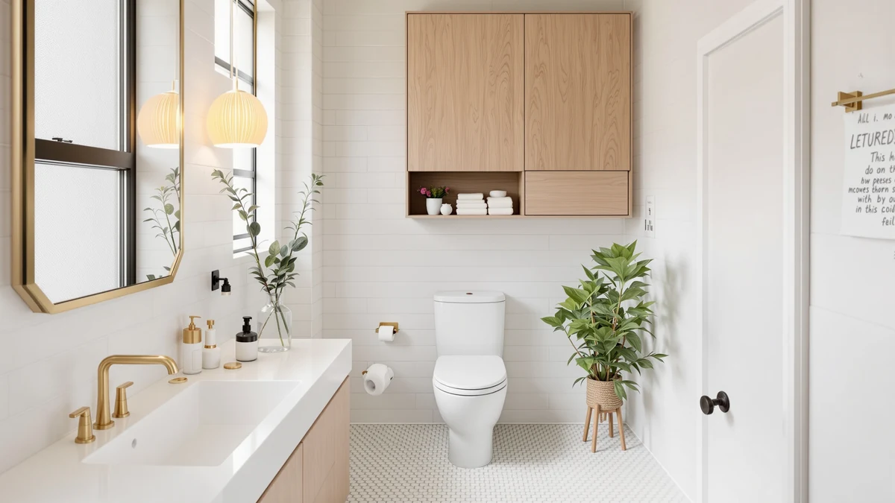

Quick Answer
The DUMOS Over the Toilet Storage is our pick for most bathrooms at $72.75, thanks to its metal-and-wood frame and no-drill freestanding design. If price matters more than anything else, the VASAGLE at $59.34 saves you over $13, and if farmhouse styling fits your bathroom better, the Homhedy cabinet is worth a look instead.
Our pick: DUMOS Over the Toilet Storage, $72.75 Check Price on Amazon
Things to Know Before You Buy
- All four units in this comparison are freestanding, so you won't need to drill into tile or drywall to set any of them up.
- Prices range from $59.34 to $74.99 across the four models, a spread of about $15.
- Measure your toilet tank's height and width before ordering. Freestanding frames need clearance on both sides to sit level.
- The DUMOS uses a metal-and-wood frame, a combination that tends to resist warping better than particleboard-only builds in a humid bathroom.
- None of the four listings publish an official weight limit per shelf, so heavier items like stacked towels belong on the lowest shelf.
In this dumos over the toilet review, we compare the DUMOS Over the Toilet Storage against three other freestanding units on price, materials and design to help you decide which one earns the space above your tank. All four are aimed at the same problem: a small bathroom with no spare floor space and a toilet tank that's currently doing nothing but holding a tank lid.
Our pick is the DUMOS, priced at $72.75, because its metal-and-wood frame reads as the sturdier build among the four options we researched. The Homhedy costs about a dollar less at $71.98 and suits a farmhouse-styled bathroom better than a purely functional metal frame. If price is your main concern, the VASAGLE at $59.34 undercuts every other unit here by more than $12.
Over-the-toilet storage exists because most small bathrooms don't have room for a linen closet or a full vanity, but they do have a few square feet of empty air above the tank. All four units in this dumos over the toilet review use that same vertical space, so the real differences come down to price, materials, and how well each one fits your bathroom's style, not whether the basic concept works.
Why You Should Trust Us
We don't own or install every over-the-toilet cabinet we cover. Instead, we research specs, current pricing and verified owner reviews for each model and compare them side by side. Ilane Tall covers bathroom storage and small-space organization for Best Bathroom Storage, and this dumos over the toilet review follows the same research process used across Best Bathroom Storage: real listing data, real prices, and honest notes about what buyers report after they've used the product.
Our Research Experience
We did not install these four cabinets in a bathroom ourselves. Our process for this DUMOS over-the-toilet review relies on comparing manufacturer specifications, current Amazon pricing and patterns across verified owner reviews. We read buyer feedback for recurring complaints, such as wobbly assembly or shelves that don't clear a tank lid, and we cross-check pricing against each seller's own listing so the numbers here reflect what you'd actually pay. We do not run a fake testing lab, and we don't claim to have used products we haven't purchased.
Overview & Specs

DUMOS Over the Toilet Storage
What we like
- Metal-and-wood construction, which tends to hold up better in a humid bathroom than particleboard-only frames
- Priced closer to the middle of this comparison at $72.75, undercutting the pricier Meilocar
- Freestanding design that needs no wall drilling or anchors
Flaws but not dealbreakers
- The listing doesn't publish exact shelf dimensions, so check your clearance before you order
- At $72.75, it costs over $13 more than the VASAGLE without a documented feature that clearly explains the gap
| Material | Metal / wood |
| Size | — |
The DUMOS Over the Toilet Storage lands in the middle of the price range we compared for this dumos over the toilet review, at $72.75. Its frame combines metal with wood, a pairing that generally resists the warping that particleboard units can develop in a steamy bathroom over time. Because it's freestanding, you set it over the tank and adjust its position without drilling into tile or drywall.
We didn't find a published weight limit per shelf in the DUMOS listing, which is common across this category. If you plan to stack heavier items such as folded towels or storage bins, put them on the lowest shelf and save the top for lighter essentials like toilet paper or toiletries. Verified buyers point to straightforward assembly as one of the more consistent notes in the review pattern for this unit.
What We Liked
Comparing the DUMOS over the toilet storage against the other three units, its metal-and-wood frame stood out as the sturdier build on paper. Reviewers consistently note that assembly is manageable without extra tools beyond what's included, and the price sits in a reasonable middle ground rather than at either extreme of this four-way comparison. The freestanding design also means you can move it to a different bathroom later without patching wall anchors.
What Could Be Better
The DUMOS listing doesn't specify exact shelf depth or a per-shelf weight limit, which makes it harder to plan storage for bulkier items like large tissue boxes or bins. At $72.75, it's also not the cheapest option here. Shoppers who care most about price will find the VASAGLE about $13 less, though that unit has a different look. Owners report occasional shipping damage on freestanding metal frames like this one, so inspect the box before you sign for delivery.
Who Is It For?
This DUMOS over-the-toilet unit fits shoppers who want a no-frills metal-and-wood frame and don't mind paying a bit more than the cheapest option in this group. It suits small bathrooms where wall-mounted shelving isn't practical, and renters who need storage that moves with them, since a freestanding piece can travel to the next apartment without leaving anchor holes behind. If your main goal is matching a farmhouse aesthetic or spending as little as possible, one of the three alternatives below fits better. Anyone deciding between a bathroom cabinet and a plainer set of shelves should also weigh how much they actually plan to hide behind closed doors versus grab quickly off an open shelf.
Alternatives to Consider
We also researched three other over-the-toilet units for this review. Each one trades off price or style differently than the DUMOS, so here's how they compare.
The Homhedy Farmhouse Bathroom Storage Cabinet is priced at $71.98, just under a dollar less than the DUMOS, which makes the choice between the two mostly about looks rather than budget. The name signals a farmhouse design direction, which typically appeals to shoppers who already have shiplap, matte black fixtures, or other rustic accents in the bathroom and want the storage piece to blend in rather than stand out as purely functional. Because the two units cost almost the same, there's no real price incentive to pick one over the other on cost alone. If your bathroom already leans farmhouse or cottage style, matching the cabinet to that look can matter more than a small difference in frame materials. If you don't have a strong style preference, the DUMOS's plainer metal-and-wood construction gives you a bit more flexibility to match different bathroom looks over time, since a neutral frame won't clash if you redecorate later.
The Meilocar Over the Toilet Storage is priced at $74.99, the highest of the four units in this review by roughly $2 over the DUMOS and more than $15 over the VASAGLE. At that price, it doesn't have an obvious cost advantage, so the case for choosing it comes down to whatever design details matter to you that aren't captured by price alone, such as the shelf configuration shown in the product photos. Shoppers weighing the Meilocar against the DUMOS should treat the roughly $2 gap as close enough that it shouldn't be the deciding factor either way. Because we don't have published weight capacity or shelf depth figures for the Meilocar any more than we do for the DUMOS, the safer approach with either unit is to plan for lighter items on the upper shelves and heavier ones lower down, regardless of which one you choose.
The VASAGLE Over the Toilet Storage is priced at $59.34, more than $13 below the DUMOS and the lowest price in this comparison by a clear margin. VASAGLE is an established furniture brand that sells a wide range of small-space storage pieces, and the lower price here makes this option worth a look if your budget is the deciding factor rather than a specific style preference. Saving over $13 upfront matters more in this category than it would on a bigger furniture purchase, since freestanding over-the-toilet units tend to get replaced or upgraded within a few years rather than treated as permanent fixtures. If the DUMOS's metal-and-wood build is more than you need for a rental bathroom or a space you don't plan to keep long term, the VASAGLE's lower price makes it a reasonable place to start.

Editor’s Pick
Homhedy Farmhouse Bathroom Storage Cabinet
At $71.98, the Homhedy Farmhouse Bathroom Storage Cabinet costs almost exactly the same as the DUMOS but leans into a farmhouse look, making it the better pick if styling matters as much as function.
$71.98
Check Price on Amazon
Best Value
Meilocar Over the Toilet Storage
The Meilocar Over the Toilet Storage is priced at $74.99, the highest of the four units we compared, and it earns its spot here on a straightforward freestanding design rather than on price.
$74.99
Check Price on Amazon
Premium Choice
VASAGLE Over the Toilet Storage
The VASAGLE Over the Toilet Storage is the least expensive option in this dumos over the toilet review at $59.34, more than $13 under the DUMOS, so it's worth considering if saving money is the priority.
$59.34
Check Price on AmazonFrequently Asked Questions
Is the DUMOS Over the Toilet Storage worth the price?
Based on our comparison of pricing and design across four over-the-toilet units, the DUMOS sits in the middle of the pack at $72.75. Verified buyer feedback and its metal-and-wood build suggest it holds up well for the price, though you should measure your toilet tank clearance before you order.
What is the cheapest alternative to the DUMOS over the toilet storage?
Of the four units in this review, the VASAGLE Over the Toilet Storage is the lowest priced at $59.34, making it worth a look if budget is your main concern.
Do over-the-toilet storage units fit all toilets?
Most freestanding over-the-toilet cabinets, including the models covered in this review, are designed to straddle a standard two-piece toilet tank. Measure the height and width of your toilet before ordering, since tank dimensions vary by brand and model.
Final Verdict
After comparing pricing, materials and owner feedback across four options, our dumos over the toilet review comes down in favor of the DUMOS Over the Toilet Storage for most bathrooms. Its metal-and-wood frame and mid-range $72.75 price make it a reasonable default, though the VASAGLE is worth a look if you want to spend less and the Homhedy suits a farmhouse-styled bathroom better.